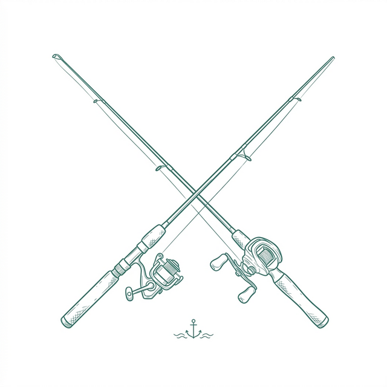
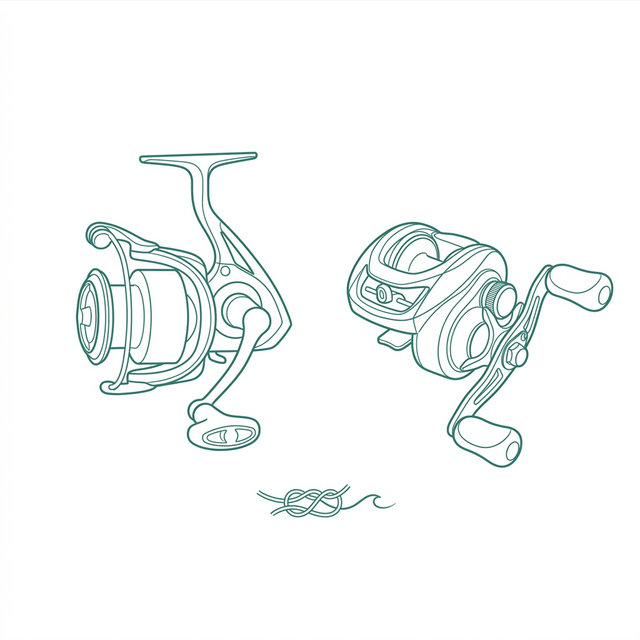
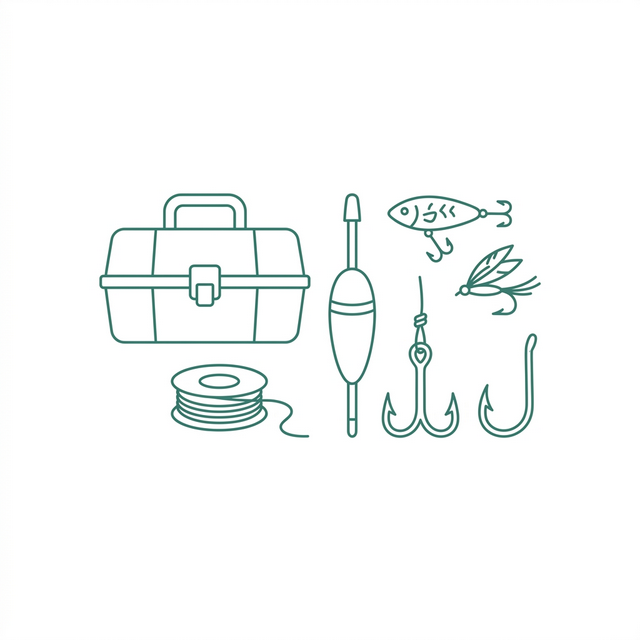

Sección 01
Cañas
Las mejores cañas para cada modalidad de pesca. Spinning, baitcasting, lance y embarcada — encontrá la herramienta ideal para tu próxima salida.

Las mejores cañas para cada modalidad de pesca. Spinning, baitcasting, lance y embarcada — encontrá la herramienta ideal para tu próxima salida.

Reels de alta performance para cada estilo. Desde spinning frontales hasta baitcasting de precisión, equipamiento que resiste jornada tras jornada.

Todo lo que necesitás para completar tu equipo. Anzuelos, señuelos, líneas, bolsos y más — los detalles que hacen la diferencia en el agua.